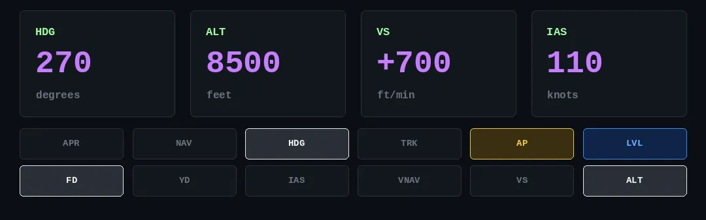
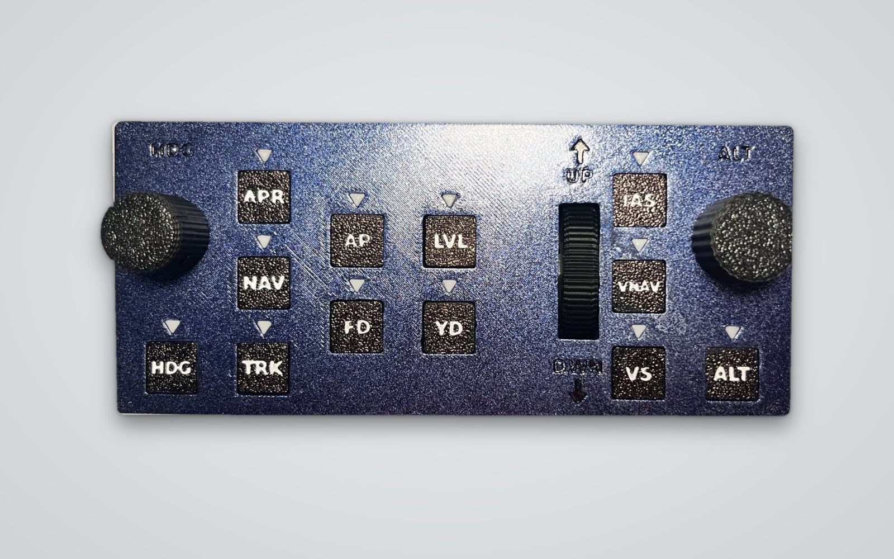
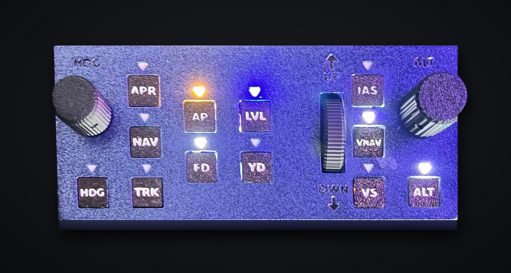
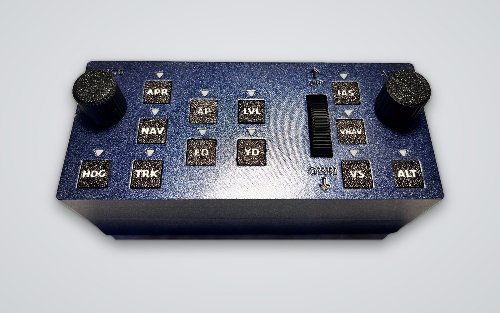

AP-08 Virtual shows heading, altitude, vertical speed, speed and the 12 autopilot mode lights, always in view. And you control it with the mouse: one click to engage a mode, the wheel to change values.AP-08 Virtuale mostra rotta, quota, velocità verticale, velocità e le spie dei 12 modi dell'autopilota, sempre in vista. E lo comandi con il mouse: un clic per attivare un modo, la rotellina per cambiare i valori.
On a second monitor, a tablet or over the simulator. No hardware to buy.Su un secondo monitor, su un tablet o sopra al simulatore. Nessun hardware da comprare.

MSFS has no window that shows just the autopilot. AP-08 Virtual creates one and links it to the simulator: what you change in the window changes in the cockpit, and vice versa.MSFS non ha una finestra che mostri solo l'autopilota. AP-08 Virtuale la crea e la collega al simulatore: quello che cambi nella finestra cambia nel cockpit, e viceversa.
Pay once and get the program and the user guide right away. Future updates are included. Secure payment with card or PayPal.Paghi una volta, ricevi subito il programma e la guida d'uso. Gli aggiornamenti futuri sono compresi. Pagamento sicuro con carta o PayPal.
A 3D-printed desktop panel with an Arduino Mega: 12 buttons with lights, HDG and ALT knobs, a wheel for vertical speed. With the complete package it uses the same AP-08 window, driven by the panel. Files, guide and software are on Cults3D, Etsy and Payhip.Un pannello da scrivania stampato in 3D con Arduino Mega: 12 tasti con spia, manopole HDG e ALT, rotella per la velocità verticale. Con il pacchetto completo usa la stessa finestra AP-08, comandata dal pannello. File, guida e software si trovano su Cults3D, Etsy e Payhip.



No. AP-08 Virtual runs on your PC only: use it with a mouse, touchpad or touchscreen. The physical panel is optional.No. AP-08 Virtuale funziona solo con il PC: si usa con mouse, touchpad o touchscreen. Il pannello fisico è facoltativo.
Standard MSFS commands work with aircraft that have a standard autopilot. The included profiles cover the most common avionics of the default aircraft and a community Airbus; TRK, VNAV and Airbus aircraft need the free MobiFlight module. Complex third-party aircraft are not supported yet.I comandi standard di MSFS funzionano con gli aerei con autopilota standard. I profili inclusi coprono le avioniche più usate degli aerei di serie e un Airbus della community; TRK, VNAV e gli Airbus richiedono il modulo gratuito MobiFlight. Gli aerei complessi di terze parti per ora non sono coperti.
Yes: set MSFS to borderless window mode and tick “Always on top” in the program menu. Or use a second monitor or a tablet via remote desktop.Sì: metti MSFS in modalità finestra senza bordi e spunta “Sempre in primo piano” nel menu del programma. Oppure usa un secondo monitor o un tablet in desktop remoto.
That's normal for new programs without a digital signature: click “More info” and then “Run anyway”. It only happens the first time.È normale per i programmi nuovi senza firma digitale: clicca “Ulteriori informazioni” e poi “Esegui comunque”. Succede solo la prima volta.
The program tells you when a new version is out; download it again for free from your purchase.Il programma ti avvisa quando esce una versione nuova; la riscarichi gratis dal tuo acquisto.
No: we only sell files, code, guides and software, all as downloads.No: vendiamo solo file, codice, istruzioni e software, tutto in download.